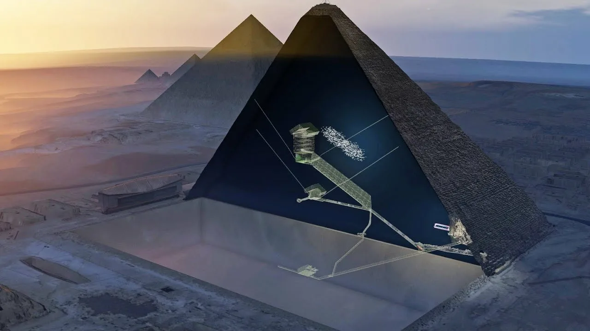

Пирамида Хеопса — национальное достояние Египта, а также единственное из Семи чудес света, уцелевшее до наших дней. Она расположена на плато Гиза, в 8 км от одноимённого города, в 25 км от центра Каира. Пирамида была выстроена для фараона Хеопса IV династии. Её исконное название — Ахет-Хуфу, что означает «Относящийся к небосклону». Внутри пирамиды наибольший интерес представляют три погребальные палаты, которые располагаются одна над другой по строгой вертикали. Самая нижняя осталась незаконченной, вторая принадлежит жене фараона, а третья — самому Хеопсу. Пирамида доступна туристам, в неё можно спуститься.
Пирамида Хеопса
